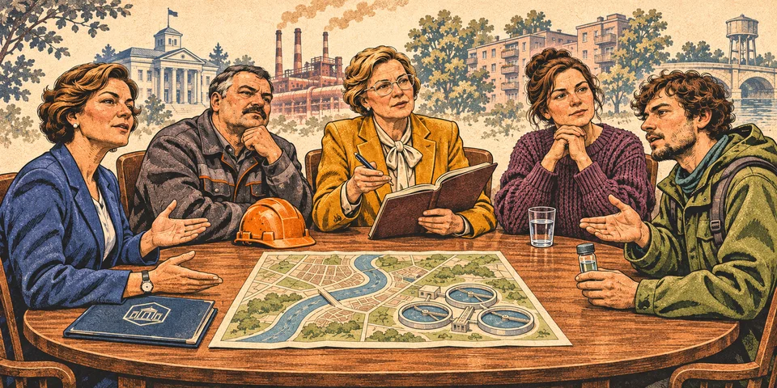

Очистные сооружения города выработали свой ресурс. После аварии пять сторон должны договориться о помощи жителям и восстановлении очистных.
Задайте позиции
Заполните анкеты всех пяти сторон или примените готовые настройки. Ответы задают требования и пределы уступок.
Послушайте переговоры
Агенты проведут три раунда. В журнале появится до 15 реплик. Затем стороны проголосуют по общему протоколу.
Разберите итог
Газета покажет, каким может стать город через десять лет. Помощник разберёт реплики выбранной стороны и предложит, что можно было сказать иначе.